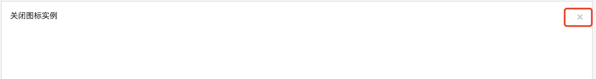
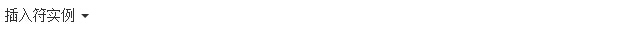
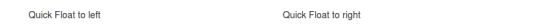
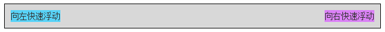
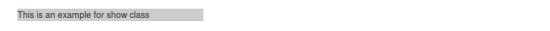
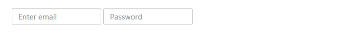

Bootstrap 辅助类
この章では、Bootstrap にあって役に立つ可能性のあるいくつかのヘルパークラスについて説明します。
文本
以下のさまざまなクラスは、異なるテキストの色を示します。テキストがリンクの場合、マウスをテキスト上に移動すると暗くなります。
| 类 | 描述 | 实例 |
|---|---|---|
| .text-muted | "text-muted" 类的文本样式 | 尝试一下 |
| .text-primary | "text-primary" 类的文本样式 | 尝试一下 |
| .text-success | "text-success" 类的文本样式 | 尝试一下 |
| .text-info | "text-info" 类的文本样式 | 尝试一下 |
| .text-warning | "text-warning" 类的文本样式 | 尝试一下 |
| .text-danger | "text-danger" 类的文本样式 | 尝试一下 |
背景
以下のさまざまなクラスは、異なる背景色を示します。テキストがリンクの場合、マウスをテキスト上に移動すると暗くなります。
| 类 | 描述 | 实例 |
|---|---|---|
| .bg-primary | 表のセルは "bg-primary" クラスを使用しています。 | 尝试一下 |
| .bg-success | 表のセルは "bg-success" クラスを使用しています。 | 尝试一下 |
| .bg-info | 表のセルは "bg-info" クラスを使用しています。 | 尝试一下 |
| .bg-warning | 表のセルは "bg-warning" クラスを使用しています。 | 尝试一下 |
| .bg-danger | 表のセルは "bg-danger" クラスを使用しています。 | 尝试一下 |
其他
| 类 | 描述 | 实例 |
|---|---|---|
| .pull-left | 要素を左にフロートさせる | 尝试一下 |
| .pull-right | 要素を右にフロートさせる | 尝试一下 |
| .center-block | 要素を display:block に設定し、中央に表示します。 | 尝试一下 |
| .clearfix | 清除浮动 | 尝试一下 |
| .show | 要素を強制的に表示する | 尝试一下 |
| .hidden | 要素を強制的に非表示にする | 尝试一下 |
| .sr-only | スクリーンリーダー以外のすべてのデバイスで要素を非表示にします。 | 尝试一下 |
| .sr-only-focusable | .sr-only クラスと組み合わせて使用し、要素がフォーカスを取得したときに表示します（例：キーボード操作のユーザー）。 | 尝试一下 |
| .text-hide | ページ要素に含まれるテキストコンテンツを背景画像に置き換えます。 | 尝试一下 |
| .close | 閉じるボタンを表示する | 尝试一下 |
| .caret | ドロップダウン機能を表示する | 尝试一下 |
更多实例
关闭图标
汎用の閉じるアイコンを使用して、モーダルと警告を閉じます。class を使用します。close閉じるアイコンを取得します。
結果は次のようになります：

aria-hidden="true"主に障害者（例：視覚障害者）が読み上げデバイス（自動でコンテンツを読み取り、再生する）を使用する際に、この属性を持つコンテンツを再生するときは自動的にスキップし、障害者が混乱しないようにするためです。
插入符
キャレットを使用して、ドロップダウンの機能と方向を示します。class を備えたcaret<span> 要素でこの機能を実現します。
結果は次のようになります：

快速浮动
それぞれ class を使用できますpull-left 或 pull-right要素を左または右にフロートさせます。以下の例はこれを示しています。
結果は次のようになります：

ナビゲーションバー内のコンポーネントを整列させるには、次を使用してください。.navbar-left 或 .navbar-right代わりに。ご覧ください。Bootstrap 导航栏。
内容居中
使用 classcenter-block要素を中央揃えにするには。
实例
尝试一下 »
結果は次のようになります：
清除浮动
要素のフロートをクリアする必要がある場合は、使用してください。.clearfix class。
实例
尝试一下 »
結果は次のようになります：

コンテンツの表示と非表示
class を使用することで.show 和 .hidden要素を強制的に表示または非表示（スクリーンリーダーを含む）に設定します。
实例
尝试一下 »
結果は次のようになります：

屏幕阅读器
class を使用することで.sr-onlyスクリーンリーダー以外のすべてのデバイスから要素を非表示にします。
实例
尝试一下 »
結果は次のようになります：

ここでは、2つの input タイプの label タグの両方に class が付いていることがわかります。sr-only、そのため、ラベルはスクリーンリーダーにのみ表示されます。
其他扩展
クリックしてメモを共有
笔记需要是本篇文章的内容扩展！
文章投稿，可点击这里
注册邀请码获取方式
分享笔记前必须登录！
注册邀请码获取方式